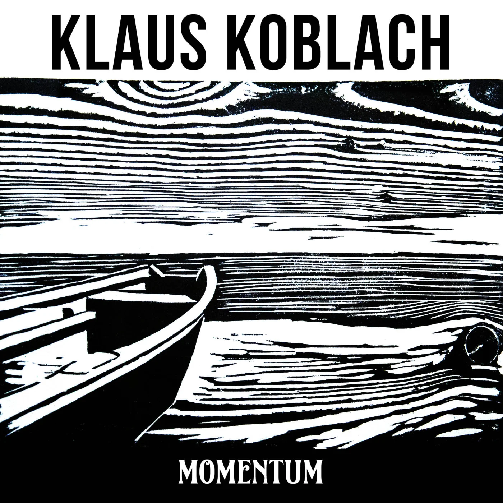
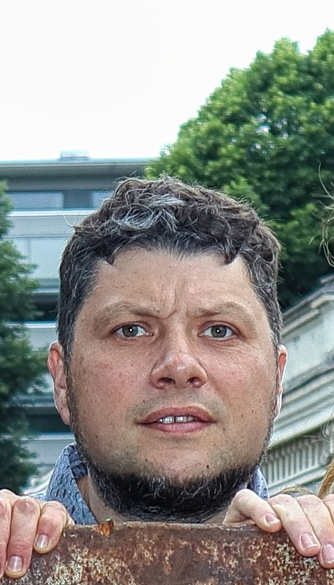
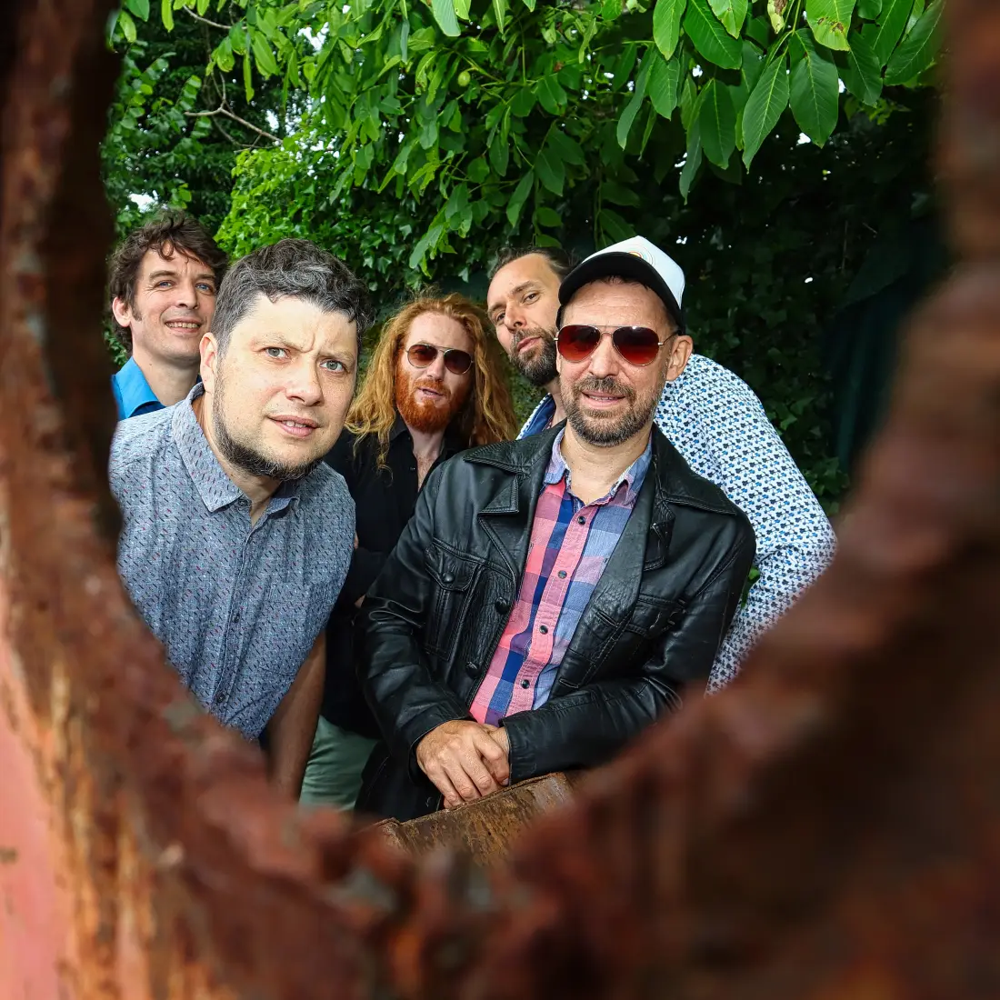

KLAUS KOBLACH wurde nie geboren. Er ist einfach entstanden. Sein erstes Lied hat ihm abverlangt, sich selbst einen Namen zu geben. So ist er zur Welt gekommen, 2017 mit seinem Debut s’Warzawieble als Gewinnersong beim Mundart Pop/Rock Wettbewerb des ORF Vorarlberg.
Seither hat Klaus viel Musik gemacht und neue Lieder geschrieben. Es bleibt deutschsprachig mit viel Dialekt, fühlt sich überall wohl von Reggae über Rock bis Bossa Nova und betreibt bei aller Gesellschaftskritik auch Schabernack.

Neue EP · 2025
Momentum
Aufgenommen im Herbst bei Jojo Strickner in den Chacca Records Studios in Dornbirn. Fünf Lieder über Aufbruch, Ankommen und das, was dazwischen passiert.
- 01Der Lauf3:36
- 02Offline4:12
- 03Kapuze3:49
- 04Momentum4:03
- 05Schritte4:24
Aufnahme, Technik & Mixing: Jojo Strickner · Mastering: Toni Meloni · Titelbild: Hans-Dieter Oetting · Akkordeon (Gast): Kurt Gehring
Hör reinBesetzung
-
Pete Ionian
Gesang & Texte
-

Bernhard Kuzel
Gitarre, Gesang
-
Gopal Aberer
Bass
-
Peter Rimpau
Schlagzeug, Gesang
-
Andreas Huemer
Posaune

Wer isch etz der KLAUS KOBLACH? An Medizinma odr an Scharlatan? A Großmul odr an Tüfstapler? An Gschichtledrucker odr a Tanzkapella? Ma woass as ned so gnau. Jedenfalls muass er berühmt si — immerhin hot er a eigene Autobahnusfahrt.
Kontakt
Bernhard Kuzel
Michael-Beer-Straße 3
A-6830 Rankweil